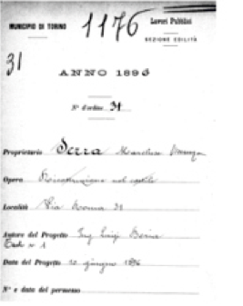
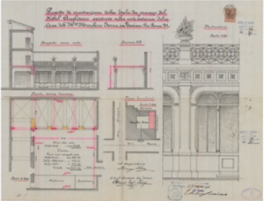
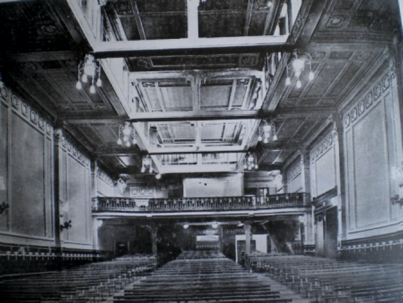

Ex Cinema Splendor
 
Progetti edilizi di Via Roma 31: sala da pranzo dell’Hotel Trombetta. (Fonte: Archivio Storico della città di Torino, 1896).
Nel 1906 la sala del Cinema Splendor era stata inserita al posto del salone da pranzo del vecchio hotel Trombetta d’Angleterre, in un cortile della vecchia via Roma 31/33. Primo proprietario del cinema fu Michele Sala, che poi lo cedette a Federico Sartore e Giuseppe Momigliano i quali diedero a Pietro Fenoglio il compito di progettare il Nuovo Cinema Splendor. Il progettista "si avvalse del calcestruzzo armato per coprite il vasto salone e consentire l’allora singolare capienza di 650 spettatori". Si tratta di un luogo tecnologicamente all’avanguardia, definito "una delle più razionali ed eleganti sale cinematografiche d’inizio secolo".
Inaugurato il 6 novembre 1909, il Nuovo Cinema Splendor non aveva una facciata propria e per questo il richiamo era garantito da una grande insegna luminosa all’angolo tra le vie Roma e Cavour. La platea conteneva 560 spettatori, mentre al piano rialzato c’erano 85 poltroncine.
Progetti edilizi di Via Roma 31 e 33: nuovo cinema Splendor e relativo ingresso. (Fonte: Archivio Storico della città di Torino, magglio 1909, agosto 1909).
